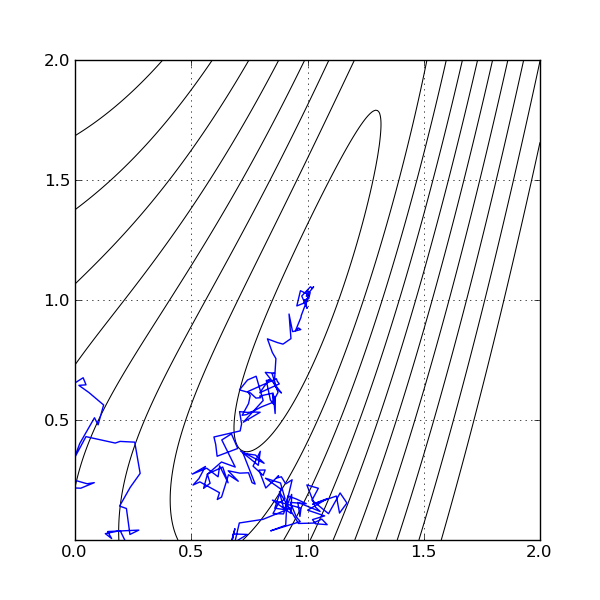

Optimization by Simulated Annealing¶
Deterministic methods for optimization, such as the gradient or Newton, are very efficient in finding the minimum, given a good estimate. Unfortunatelly, finding a good estimate can be a problem as hard as finding the minimum itself. In general, these methods will converge to a local minimum next to the first estimate. If the objective function is well behaved, it will find the global minimum, but most of the time this cannot be guaranteed.
Stochastic methods, on the other hand, do not use a deterministic law to find the minimum. Instead, they wander randomly throughout the domain and, using a good heuristic, keep the good results. The power of stochastic methods in finding global minima comes from the fact that, since the estimates are computed with a certain degree of randomness, they might escape local minima and settle for the global minima. Simulated annealing is one of such methods.
In simulated annealing, there is an analogy with the way an atom behaves in the slow cooling of metal. When the metal alloy is hot, atoms in the crystalin structure of the metal wander with high energy. As the metal cools, they tend to settle in places of low energy. In the optimization algorithm, the estimate is the position of a particle with high temperature. It wanders around the domain, and tends to position in places of low energy (such as the position of the minimum). Simulated annealing have been used in lots of applications with success.
We will use simulated annealing to find the minimum of the Rosenbrock function. There is absolutelly no difference in how a simulated annealing optimizer is created and used. We start by importing peach and numpy in different namespaces:
from numpy import *
import peach as p
We must also create the objective function and the gradient function, as the algorithms use them. Notice however that, as before, we can omit the gradient function and let Peach estimate them for us if needed:
def f(xy):
x, y = xy
return (1.-x)**2. + (y-x*x)**2.
def df(xy):
x, y = xy
return array( [ -2.*(1.-x) - 4.*x*(y - x*x), 2.*(y - x*x) ])
Now we will create the optimizer. We create these optimizers in the same way we
created other optimizers: by instantiating the corresponding class, passing the
function and the first estimate. Notice that the first estimates are given in
the form of a tuple, with the first estimate of  in the first place,
and the first estimate of
in the first place,
and the first estimate of  in the second place. There is no need to use
tuples: lists or arrays will do. To create the optimizers, we issue:
in the second place. There is no need to use
tuples: lists or arrays will do. To create the optimizers, we issue:
csa = p.ContinuousSA(f, (0.1, 0.2), optm=Gradient(f, df))
Notice that we included an optm parameter in the creation of the optimizer. This is done because we want a little improvement on our estimates even if the annealing process refuses a new estimate. To make this happen, we pass to the algorithm a standard method of optimization, such as Gradient or Newton. Notice also that we must fully instantiate the standard optimizer, or we will receive errors.
As we done in the other optimization tutorials, we will execute the algorithm step by step. We can do this to keep track of the estimates to plot a graphic. We do this using the commands:
xs = [ ]
i = 0
while i < 500:
x, e = csa.step()
xs.append(x)
i = i + 1
Notice that we used 500 iterations here. In general, stochastic methods pay this price to be able to find the global minimum: they need more iterations to converge. That’s not a problem, however, since finding the global minimum is a desired result, and the penalty in the convergence time is not that significant.
The xs variable will hold, in sequence, the estimates. We can plot them to see the convergence trace. The figure below is a representation of the execution of the method. The function itself is represented as contour curves in the plane, and the estimate tracks over them. Notice the unusual path that the estimate followed to arrive at the result.
